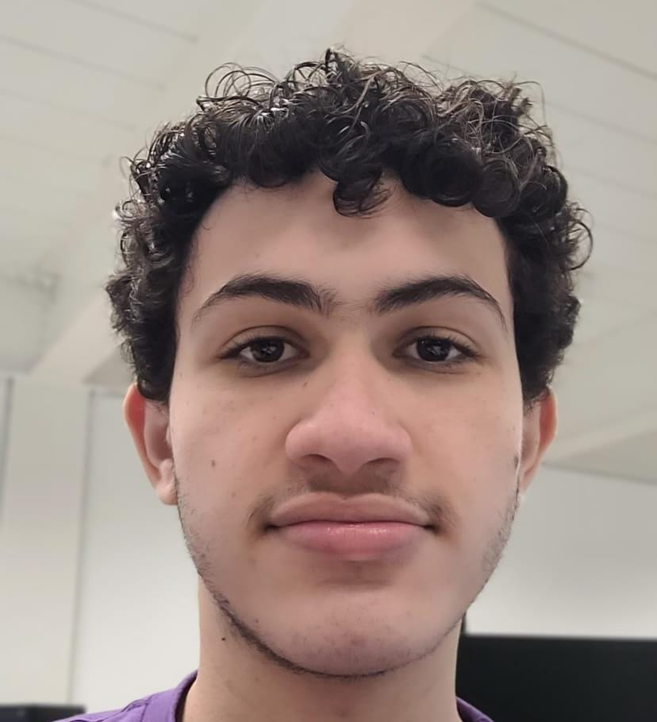
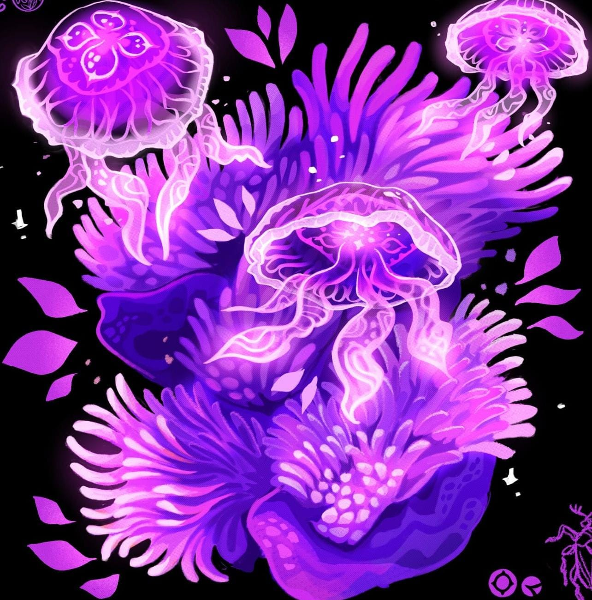
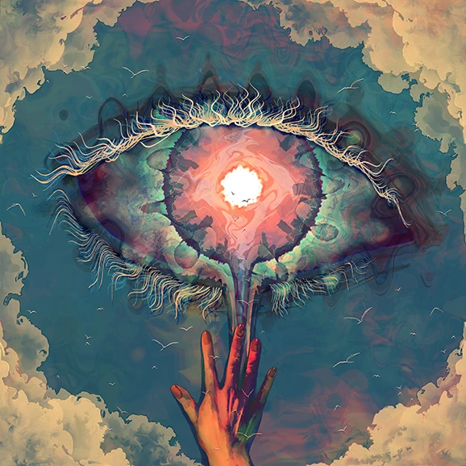
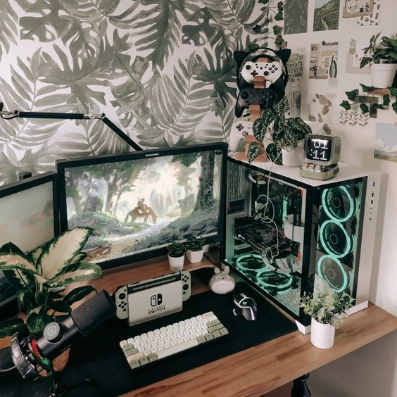

Sobre mim
Meu nome é Gustavo e neste momento estou me formando no ensino médio técnico em TI. Pretendo atuar na área de desenvolvimento web tanto front end como back end e no futuro me tornar um fullstack developer e aproveitar todas as diversas opções e oportunidades que a área oferece.
Hard Skills:
Java
HTML
CSS
Redes de computadores
Design
Segurança em TI
Soft Skills:
Bom em trabalhar em equipe
Comunicativo
Flexível
Resolução de problemas
Educado
Contando um pouco mais sobre mim tenho muitos interesses diversificados, grande parte do meu tempo estou fazendo coisas que gosto como jogar, ouvir música, programar, desenhar e dentre várias outras coisas.
Sou apaixonado pela natureza e o espaço e sempre tento interligar meus gostos de alguma forma. Por conta de consumir diversos conteúdos variados não me enxergo trabalhando só com uma coisa, e sim aproveitar ao máximo meus conhecimentos para estudar sobre e produzir algo que me orgulhe de estar criando.